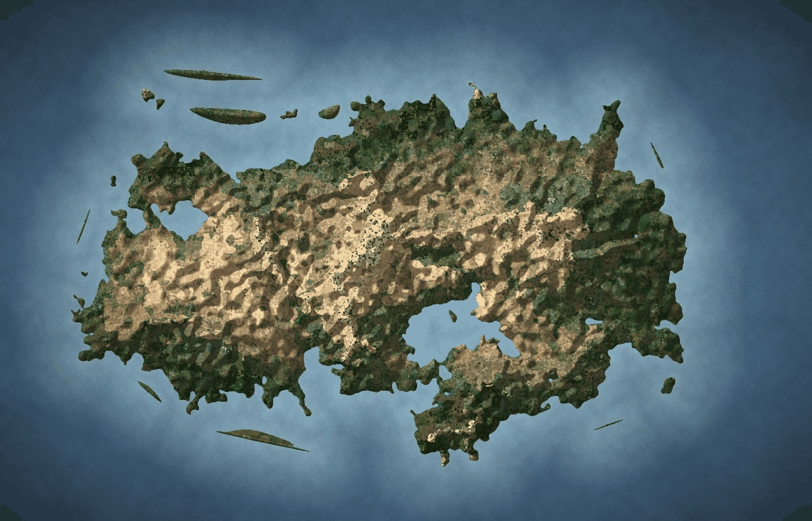
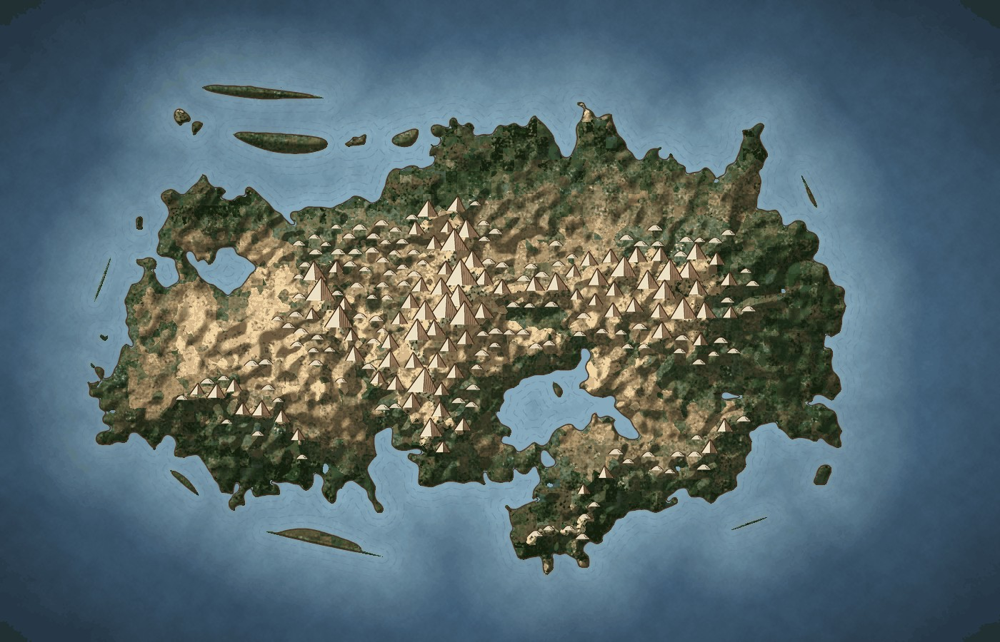
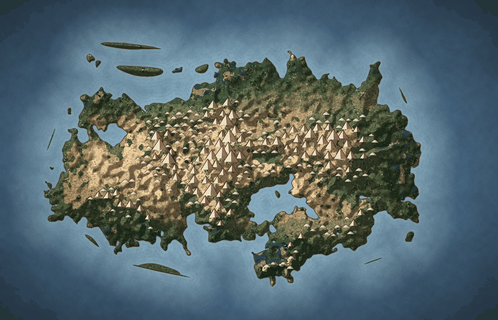

地形を大きな区分で捉える(11種類との比較)
ユーザー案(2026-11-18)「地形をもっと大きなカテゴリーで捉えてパターン化するのは?」の検証と作り直しです。地面を森 / 開けた植生(低木・草地・畑・こけ) / 裸地・人工物 / 雪・氷 / 水辺(水・湿地)の5つにまとめました。
絵の比較(上が11種類、下が5つの区分)
段階4a: 11種類の地面で、型で塗った絵

絵番号 E006段階5a: 5つの大きな区分で、型で塗った絵(新)
 絵番号 E008
絵番号 E008
段階4b: 4aに海岸の墨線・波線・山の絵(11種類)

絵番号 E007段階5b: 5aに海岸の墨線・波線・山の絵(新)

絵番号 E0095aは、森(緑)と開けた所(黄土色)の大きなまとまりがはっきりし、すっきりしました。細かい色の斑点は、型の混ざり方として残っています。区画のつなぎ目(四角い継ぎ目)が出ないよう、区画ごとの明るさの差を消しました。山の絵は仮の記号で、まだ多すぎます。
数字の比較: 色と地面の結びつき
| 1画素 | 結びつきの強さ(11種類) | 結びつきの強さ(5区分) | 未見地点の当たり(11種類) | 未見地点の当たり(5区分) | 最多と答えた場合(11種類 / 5区分) |
|---|---|---|---|---|---|
| 約600m | 0.542 | 0.778 | 70.6% | 81.3% | 42.6% / 39.7% |
| 約75m | 0.488 | 0.72 | 65.9% | 76.7% | 38.4% / 42.3% |
| 約10m | 0.432 | 0.626 | 59.9% | 74.5% | 35.2% / 39.7% |
世界120地点の四角(1辺16画素)で調べました。どの倍率でも、結びつきは乱数との比較で有意です(5%)。「未見地点の当たり」は、地点ごとに分けて、見ていない地点で色から地面の区分を当てた割合です。
型で色を作る合成は、本物と見分けられるか(約600m)
| 合成の作り方 | 本物と見分けられる割合(11種類 → 5区分) |
|---|---|
| 地面の区分+気候の群を指定 | 71% → 68% |
| 気候の群だけ指定 | 66% → 66% |
| 地面の区分だけ指定 | 71% → 70% |
| 何も指定しない | 75% → 76% |
| 平らな色(混ぜない) | 99% → 99% |
50%なら、本物と区別がつきません。5区分にしても、気候の群だけで型を選ぶ場合(66%)より、区分を加えた場合(68%)は少し悪いままで、約7割は見分けられます。平らな色は、ほぼ確実(99%)に見分けられます。
分かったこと
- 大きな区分にすると、色と地面の結びつきは大きく強まります(0.43〜0.54 → 0.63〜0.78。当たりは60〜71% → 75〜81%)。草地・畑・低木のように、色が似て見分けにくい種類をまとめた効果です。
- 絵も、すっきりします。大きなまとまりが読み取れるようになります。
- 型で色を作る合成は、本物と見分けられます(約7割)。区分を粗くしても、この見分けやすさは大きくは変わりません。気候の群の指定が主な手がかりで、区分の効果は小さい、という結果です。
限界
- 5つの区分のまとめ方は、私が決めた1通りです。
- 合成と本物の見分けやすさは、約600mの倍率だけで調べました。約75m・約10mは計算中で、未完了です。
- 「気候の群」と、地図の生物群系の対応は、私が決めたものです。
- 絵は試作で、山の絵は仮です。
出典: ESA WorldCover 2021 (CC BY 4.0) / Sentinel-2 cloudless 2020 by EOX IT Services GmbH(Contains modified Copernicus Sentinel data 2020。非営利利用向けの条件があります)。衛星画像そのものは掲載せず、集計と合成の絵だけを載せています。